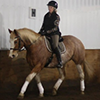

What do you do for fun?
I have an American Paint horse that I ride dressage. I take riding lessons for self improvement, and I also enjoy the spectator aspect of watching upper level dressage and jumping during February in Wellington, FL. I usually go each winter with my "barn buddies" and we've seen the likes of Jennifer Gates, Jessica Springsteen and Georgina Bloomberg compete. My husband and I have a truck and travel trailer and we love road trips. We travel to Glacier in late September each fall to see the colors and view/photograph bears. I also like to hike, read, fish (especially in Canada) and perennial gardening.
Do you have any children or grandchildren?
I have two daughters. Kendra is a small animal veterinarian in WI. She is married to John. They have have a dairy farm near Osceola, WI. She has two children: daughter is 19, and attends Lawrence University in Appleton, WI with a double major in music and environmental science. Her son is 16, and already over six feet tall. He is a sophomore and loves gaming. Youngest daughter Jessica is in IT, working for an IT firm in NE Mpls. She favors Macs, but is well versed on both platforms. She has one son who turned nine in December and is in second grade. He also is showing a talent for technology.
Do you have any pets?
 I have one horse; and we have six indoor cats and one (?) barn cat. They all found me. I didn't seek out any of them. But we've hit our limit with housecats! Although we don't have any horses at home right now (I board my horse so I can ride all winter in a heated indoor arena), we do ave our own horse barn with some hay in it. We've had several feral cats come and go over the past couple of years. We do put out food for them. We have a trail cam set up to monitor what's going on. We raised, bred and showed Alaskan Malamutes for 25 years, and in the past few years we have rescued three Labs. We are "dog-less" at the moment but at some point we will be getting another dog(s).
I have one horse; and we have six indoor cats and one (?) barn cat. They all found me. I didn't seek out any of them. But we've hit our limit with housecats! Although we don't have any horses at home right now (I board my horse so I can ride all winter in a heated indoor arena), we do ave our own horse barn with some hay in it. We've had several feral cats come and go over the past couple of years. We do put out food for them. We have a trail cam set up to monitor what's going on. We raised, bred and showed Alaskan Malamutes for 25 years, and in the past few years we have rescued three Labs. We are "dog-less" at the moment but at some point we will be getting another dog(s).
Where do you live?
We live up in Isanti County. We raised our girls there. Both graduated from Cambridge High School. Kendra went to UWRF and graduated with a degree in Biotechnology, then attended U of M College of Veterinary Medicine. Her husband, John, also attended UWRF graduating with a degree in Animal Science. Jessie also attended UWRF with a major in Communicative Disorders, but ended up choosing IT as her career (she worked part-time in IT while in college). You just never know what career path you may choose.
Why are you going to school?
My "career" started out in downtown Mpls at Dain Kahlman & Quail on a Western Union teletype, entering stock and bond orders to New York and Midwest Stock Exchanges. Even back then, DKQ received orders via teletype from remote offices in Iowa, South Dakota, North Dakota, Montana and Wyoming. After that gig I worked for 42 years in the newspaper industry, landing a "union job" with the local newspaper/shopper in Anoka. Long story short, I became a journeyman printer, outputting news and ads on proprietary Compugraphic systems. I worked my way up the ranks to IT Director, managing the IT team, approximately 150 computers, 10 remote locations and centralized accounting, circulation, and advertising systems. It was a great job! I always had a love for graphic design and web dev, so here I am. I always felt I gave up the artistic side of myself when I started working excessive overtime and was eventually salaried. 60 hours a week was a typical workweek for me.